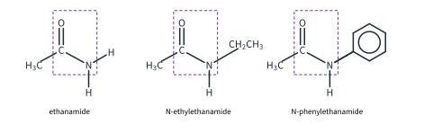
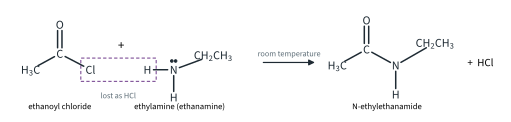
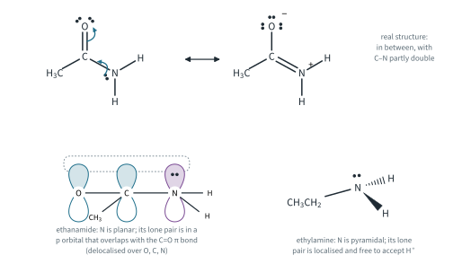
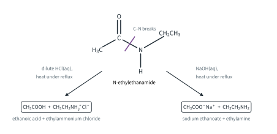
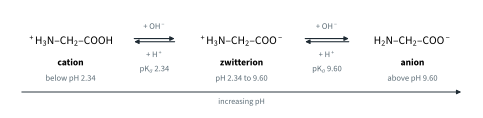
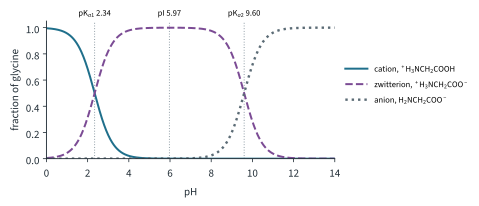
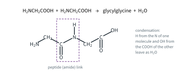
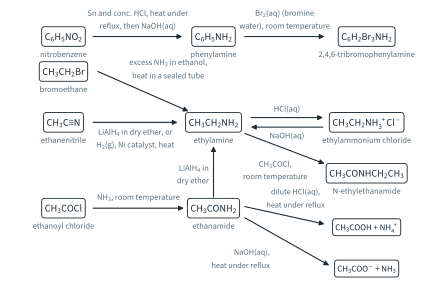

Nitrogen Compounds 2
Topic 11.9 · Nitrogen Compounds Part 2
On this page
Introduction
An amide contains the group –CONH–: a carbonyl group bonded directly to a nitrogen. The simplest amides have an NH2 group, RCONH2; if one of the H atoms on the nitrogen is replaced by an alkyl or aryl group the amide is N-substituted, RCONHR′, and the substituent's name starts with N- (Topic 11.1 Part 1). The 9476 example is ethanamide, CH3CONH2 (Fig 1).

The amide link is one of the most important bonds in chemistry and biology. It holds the amino acids of every protein together (where it is called the peptide link), and it is the repeating link in nylon and Kevlar (Topic 11.10). In this Part we see how amides are made, why they are not basic even though they contain nitrogen, how they are hydrolysed and reduced, and then the acid-base behaviour of amino acids.
Formation of amides
Amides are made by a condensation reaction (Topic 11.3): an amine (or ammonia) and an acyl chloride join, and a small molecule, HCl, is lost. The reaction is vigorous at room temperature, and steamy white fumes of HCl are given off. The amine is acting as a nucleophile: its lone pair attacks the δ+ carbonyl carbon of the acyl chloride. The mechanism (addition followed by elimination) is in Topic 11.8 Part 2; Fig 2 shows the reaction drawn out.
R′COCl + RNH2 → R′CONHR + HCl

With ammonia, ethylamine and phenylamine, ethanoyl chloride gives:
CH3COCl + NH3 → CH3CONH2 + HCl (ethanamide)
CH3COCl + CH3CH2NH2 → CH3CONHCH2CH3 + HCl (N-ethylethanamide)
CH3COCl + C6H5NH2 → CH3CONHC6H5 + HCl (N-phenylethanamide)
In practice the amine (or ammonia) is used in excess, because the HCl formed reacts with it at once to form a salt (Part 1). With two moles of amine for every mole of acyl chloride, the equations become, for example:
CH3COCl + 2NH3 → CH3CONH2 + NH4Cl
CH3COCl + 2CH3CH2NH2 → CH3CONHCH2CH3 + CH3CH2NH3+Cl−
Worked example 1
Which acyl chloride and which amine would you use to make N-methylpropanamide, CH3CH2CONHCH3?
(To answer this, cut the molecule at the C–N bond of the amide group. The part with the C=O came from the acyl chloride; the part with the N came from the amine.)
CH3CH2CO– comes from propanoyl chloride, CH3CH2COCl, and –NHCH3 from methylamine (methanamine), CH3NH2:
CH3CH2COCl + CH3NH2 → CH3CH2CONHCH3 + HCl
Why amides are neutral
Ethanamide has a nitrogen with a lone pair, just like ethylamine. Yet an aqueous solution of ethylamine is alkaline (pH 11.98 at 0.200 mol dm−3, Part 1), while an aqueous solution of ethanamide is neutral: it has no effect on litmus. Why is the amide nitrogen not basic?
In an amide, the lone pair on the nitrogen is in a p orbital that overlaps with the π bond of the adjacent C=O group (Fig 3). The lone pair is delocalised over the N, C and O atoms, and the electronegative oxygen draws the electron density towards itself. So the lone pair is not available to accept a proton, and amides are neutral.1 Compare phenylamine (Part 1), where the lone pair is only partly delocalised into a benzene ring and is still weakly basic; the C=O group pulls far more strongly.
There is good evidence for this picture (literature values):
- The C–N bond in ethanamide is about 0.133 nm long, much shorter than the C–N single bond in ethylamine (about 0.147 nm). The amide C–N bond has some double-bond character.
- The amide nitrogen and the atoms bonded to it lie in a plane, with bond angles of about 120°, as you would expect if the lone pair is in a p orbital. The nitrogen of an amine is pyramidal (about 107°).
The table brings the three kinds of nitrogen together.
| ethylamine | phenylamine | ethanamide | |
|---|---|---|---|
| N lone pair | localised on N | partly delocalised into the ring | delocalised over N–C=O |
| Shape at N | pyramidal | close to planar | planar |
| Kb / mol dm−3 (literature) | 4.5 × 10−4 | 4.3 × 10−10 | too small to measure in water |
| Aqueous solution | alkaline | very weakly alkaline | neutral |

Hydrolysis of amides
The amide link can be broken by water, but only slowly: amides must be heated under reflux for some time with aqueous acid or aqueous alkali. (Acyl chlorides are hydrolysed far more easily; the reason, and the comparison with other chlorides, are in Topic 11.8 Part 2. The partial double-bond character of the amide C–N bond is part of the reason amides are so slow.) The C–N bond breaks, and what you get depends on the conditions (Fig 4).
With aqueous acid
Dilute HCl(aq), heat under reflux. The products are the carboxylic acid and the ammonium salt; the acid takes up the NH3 or amine as soon as it is released:
CH3CONH2 + H2O + HCl → CH3COOH + NH4Cl
CH3CONHCH2CH3 + H2O + HCl → CH3COOH + CH3CH2NH3+Cl−
With aqueous alkali
NaOH(aq), heat under reflux. The products are the carboxylate salt and ammonia or the amine; the alkali takes up the carboxylic acid as soon as it forms:
CH3CONH2 + NaOH → CH3COO−Na+ + NH3
CH3CONHCH2CH3 + NaOH → CH3COO−Na+ + CH3CH2NH2
When ethanamide is heated with NaOH(aq), ammonia is given off: it turns damp red litmus paper blue. (An ammonium salt does the same with NaOH(aq) on gentle warming; an amide needs much longer heating.)

Worked example 2
Give the products of heating N-phenylethanamide, CH3CONHC6H5, under reflux (a) with dilute HCl(aq), (b) with NaOH(aq).
(To answer this, break the C–N bond, put OH on the carbonyl carbon and H on the nitrogen. Then ask what the acid or the alkali does to each half.)
(a) CH3CONHC6H5 + H2O + HCl → CH3COOH + C6H5NH3+Cl− (ethanoic acid and phenylammonium chloride)
(b) CH3CONHC6H5 + NaOH → CH3COO−Na+ + C6H5NH2 (sodium ethanoate and phenylamine)
Reduction of amides
LiAlH4 in dry ether reduces the C=O group of an amide to CH2. This time the C–N bond is not broken, so the product is an amine with the same carbon skeleton (Part 1, formation of amines):
CH3CONH2 + 4[H] → CH3CH2NH2 + H2O (ethylamine, a primary amine)
CH3CONHCH2CH3 + 4[H] → CH3CH2NHCH2CH3 + H2O (diethylamine (N-ethylethanamine), a secondary amine)
A primary amide gives a primary amine; an N-substituted amide gives a secondary amine. (LiAlH4 also reduces aldehydes and ketones, Topic 11.7, and nitriles, Part 1.) Fig 8, at the end of this Part, gathers the amine and amide reactions of Parts 1 and 2 on one page.
Amino acids
An amino acid has an amino group, –NH2, and a carboxylic acid group, –COOH. In the 2-amino acids that make up proteins, both are on the same carbon: H2NCH(R)COOH. The 9476 example is the simplest, aminoethanoic acid (glycine), H2NCH2COOH, in which R = H. Glycine is the only one of the 20 amino acids in proteins without a chiral centre; alanine, with R = CH3, is chiral (Topic 11.2).
The zwitterion
The –COOH group is an acid and the –NH2 group is a base, so they react with each other: a proton moves from the carboxylic acid group to the amino group. The result is a zwitterion (from the German zwitter, hybrid), an ion with a positive and a negative charge in the same molecule:2
H2NCH2COOH → +H3NCH2COO−
Overall the zwitterion is neutral, but it carries full charges. Glycine exists as zwitterions in the solid and in aqueous solution near pH 6, and this explains its physical properties (literature values):
- Solid glycine is held together by strong ionic attractions between the zwitterions, like an ionic lattice. It does not melt but decomposes at about 233 °C. Propanoic acid, CH3CH2COOH, has a similar Mr (74.0 against 75.0) but is a simple molecular substance, and melts at −21 °C.
- Glycine dissolves well in water (ion-dipole interactions, Topic 2), but not in non-polar solvents such as hexane.
Acid and base properties
The zwitterion still has an acidic group, –NH3+, and a basic group, –COO−, so glycine reacts with both acids and bases: it is amphoteric.
- With acid, the –COO− group accepts a proton (it acts as a Brønsted-Lowry base) and the cation forms:
+H3NCH2COO−(aq) + H+(aq) → +H3NCH2COOH(aq)
- With alkali, the –NH3+ group donates a proton (it acts as a Brønsted-Lowry acid) and the anion forms:
+H3NCH2COO−(aq) + OH−(aq) → H2NCH2COO−(aq) + H2O(l)
With hydrochloric acid and sodium hydroxide the salts are HOOCCH2NH3+Cl− and H2NCH2COO−Na+. So glycine is present as three different species, depending on the pH (Fig 5).

Which form at which pH (Further example)
Each step in Fig 5 is a weak acid equilibrium with its own pKa (literature values):
+H3NCH2COOH ⇌ +H3NCH2COO− + H+ pKa1 = 2.34
+H3NCH2COO− ⇌ H2NCH2COO− + H+ pKa2 = 9.60
The ratio of the two forms on each side of an equilibrium follows from the buffer equation of Topic 10 Part 2:
[zwitterion] / [cation] = 10(pH − 2.34) [anion] / [zwitterion] = 10(pH − 9.60)
So at pH 2.34 there are equal amounts of the cation and the zwitterion, and at pH 9.60 equal amounts of the zwitterion and the anion. Between the two, the zwitterion is almost the only form. Halfway between them, at pH (2.34 + 9.60) / 2 = 5.97, the tiny amounts of cation and anion are equal and the average charge on the glycine is zero: this pH is the isoelectric point, pI.3 Fig 6 shows the full picture.

Worked example 3 (Further example)
Use Fig 6 and the pKa values to state the main form of glycine, and roughly what percentage of the glycine it makes up, at (a) pH 1.00, (b) pH 5.97, (c) pH 12.00. (d) What is the ratio of zwitterion to cation at pH 3.34?
(a) the cation, about 96 % (calculated: 95.6 %). (b) the zwitterion, 99.95 %. (c) the anion, about 99.6 %.
(d) (To answer (d), use the first ratio.) [zwitterion] / [cation] = 10(3.34 − 2.34) = 101 = 10 : 1.
Amino acids as buffers (Further example)
A solution with similar amounts of the zwitterion and the anion (near pH 9.60) is a buffer (Topic 10 Part 2). Added acid is removed by the anion, and added alkali by the zwitterion:
H2NCH2COO− + H+ → +H3NCH2COO−
+H3NCH2COO− + OH− → H2NCH2COO− + H2O
In the same way, a solution of the cation and the zwitterion buffers near pH 2.34. Proteins, which carry many acidic and basic side groups, help to buffer blood and cells for the same reason.
Peptides (Further example)
The –NH2 group of one amino acid can condense with the –COOH group of another, forming an amide link and losing water. The product is a dipeptide, and the amide link is called the peptide link (Fig 7). Long chains of amino acids joined like this are proteins (Topic 11.10).
Because the peptide link is an amide link, it is hydrolysed in the same way: heating a peptide or protein with dilute HCl(aq) under reflux breaks it back down into its amino acids (as their cations, in the acid).


Summary
Additional information
- Beyond the syllabus: amides are not completely without basic character, but they are extremely weak bases. In concentrated strong acid they are protonated on the oxygen, not on the nitrogen. ↩
- Beyond the syllabus: in water the zwitterion outnumbers the uncharged form H2NCH2COOH by roughly 105 to 1 (literature, order of magnitude). ↩
- Beyond the syllabus: at its isoelectric point an amino acid does not move in an electric field. Separating amino acids and proteins by their isoelectric points is the basis of electrophoresis. ↩